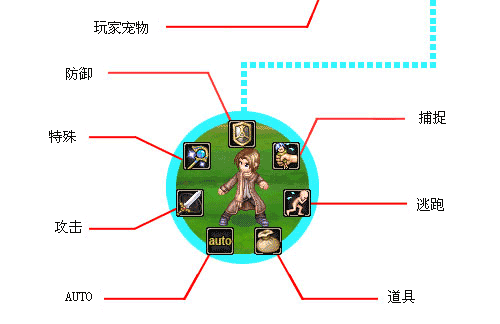

|
|
|
|
|
| 战斗又分为 P K、参战、观战三种。 | ||||||||
| 玩家在游戏中可以任意找人PK，对象可以是其它玩家或NPC！只要玩家PK的开关选项没有关闭，玩家对玩家随时都可进入PK，玩家们可要特别注意喔！ 玩家有时行走在游戏中，会发现地上出现一团烟，那就是打斗中的玩家，玩家可以选择参战或观战，选择参战就会加入其它玩家的战局。如果选择观战，玩家就可以观看其它玩家的战斗情况，不想观战时，点选右下角icon，玩家随时可以离开。 | ||||||||
|
选择您想参战的队伍吧！ | ||||||||
| 了解战斗属性攻无不胜 | ||||||||
| 飘流幻境把玩家和各个 NPC 皆分为地、水、火、风四种属性。以四种属性相生相克以衍生出各种策略和特技。玩家跟队友可以结交四种属性的队友，这样在战斗中实际运用策略，不管遇到什么属性的敌人都不用害怕。在玩家部份，属性可以在创造角色时自行选择： | ||||||||
| ||||||||
| 战斗的基本规则 | ||||||||
| 游戏中的战斗采取回合制每回合开始玩家有二十秒可以准备，玩家在战斗中可控制自己本身和跟随宠物在二十秒内可选择攻击对象和攻击方式，在确定前皆可按鼠标右键取消，一旦确定就会进入战斗状态，战斗到一方全部消灭或逃走为止。 在战斗中如果敌人攻击力太强或敌我双方实力太过悬殊时，玩家就会被打回重生点，也就是您上一次的储存记录点。若是这样的情况发生在跟随您出战的宠物，宠物就会自动取消出战，变成休息。 攻击性的特技每次使用并且击中敌人就会提升特技熟练度，特技熟练度提升至 100% 则特技就会升级，相对的攻击力也会提升，所以玩家如果想把自己某项特技提升至最高境界，记得要常使用！ 战斗结束后，如果输了会扣经验值，要好好的去面对每一场战斗！如果在战斗中带有宠物可要好好经营这场战斗，如果输的话，宠物对玩家的忠诚度会下降，若忠诚度降至太低的话，您的宠物可是会逃走的！ | ||||||||
| 战斗接口说明 | ||||||||
|  | ||||||||
| HP值：参与战斗者的能量会显示在各个人物上方。 剩余时间：每回合战斗都有20秒可以下达战斗指令，并在画面中央开始倒数进入战斗的时间 玩家宠物：您选择出战的宠物，在战斗进行中将会跟您战在同一阵线。 防御：在此回合中不发动攻击，作防御状态。 捕捉：是将敌人捕捉成为自己的宠物或伙伴，为玩家效命。 捕捉时，被捕捉者的HP愈低成功率愈高。 脱离战场：在战斗中逃离战场。 使用道具：可跳出道具选单让玩家选择想使用的道具。 自动战斗：在使用攻击型技能时，会自动施展出最后使用的招式。 一般攻击：使用一般攻击。 特技攻击：出现特技选单让玩家选择要使用的招式。 |